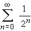
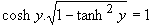
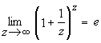

Hikayeler ve espriler III
Hayat karmaşıktır: Onun gerçek ve sanal kısımları
bulunur.
Matematik öğrencisi Genel Topolojiden sözlüdeydi
("Genel Topolojiden nasıl sözlü yapılır?" diye sormayın, bu bir hikaye).
Durumu da epey kötüydü. Öğrencinin yerlerde sürünen performansından gına gelen
hocalardan biri sordu:
"-Pekala, topoloji hakkında ne biliyorsun? Bari onu
söyle." Öğrenci cevap verdi:
"-Topolojistin tanımını biliyorum."
"-Söyle bakalım," dedi hoca, öğrencinin
ünlü bir topolog bir kahve fincanı ile simit arasındaki farkı bilmeyen kişidir
şeklindeki tanımı vereceğini umarak; ancak öğrecinin cevabı farklıydı:
"-Bir topolog kıçıyla yerdeki bir delik arasındaki
farkı bilen, fakat kıçıyla yerdeki iki delik arasındaki farkı bilmeyen
kişidir."
En son bilgime göre, öğrenci dersten geçmiş.
"Delikanlı, parlamento üyesi olmak istediğini
anlıyorum. Öğrenmen gereken ilk ders, ben bebek ölümlerinin oranları hakkında
istatistiksel bir rapor istediğimde, benim bütün istediğim, benim başbakanlığım
döneminde ölen bebeklerin sayısının başka herhangi birinin başbakanlığı
dönemindekilerden daha az olduğunun kanıtıdır.
Politik istatistik budur."
--Winston Churchill.
Entropi artık eskisi gibi değil.
Üniversitenin birinde sınavlarda hesap makinesinin
kullanılmasına izin verilip verilmesi konusunda tartışmalar yapılıyordu. Fizik
bölümü kullanılması yönünde oy kullanan ilk bölümdü. İlk 3 saatlik sınavda da
şu tek soruyu sormuşlardı:
"Planck sabitini 1 kabul ederek evreni
tanımlayın."
Feynman bir gün derste açısal momentumdan söz ediyordu.
Döndürme (rotasyon) matrislerini tanımladı ve onların değişmeli olmadıklarını
söyledikten sonra ekledi:
"Sir William Hamilton bu değişme özelliğinin
olmadığını Lady Hamilton'la bir bahçede gezintideyken keşfetmişti. Bir banka
oturduklarında bir anlık bir tutku dalgası geçti. İşte bu anda Hamilton AxB'nin
BxA'ya eşit olmadığını fark etti."
Bir ampulü değiştirmek için ...
Bir ampulü değiştirmek için kaç genel relativiteciye
ihtiyaç vardır?
İki. Biri ampulü tutar, diğeri evreni döndürür.
Bir ampulü değiştirmek için kaç quantum fizikçisine
ihtiyaç vardır?
Bir. İkisi bunu yapmak, biri de dalga fonksiyonunu renormalize etmek için.
Bir ampulü değiştirmek için kaç quantum mekanikçisine
ihtiyaç vardır?
Onlar bunu yapamaz; çünkü duyun yerini belirleseler ampulün yerini belirleyemezler.
Bir ampulü değiştirmek için kaç Heisenberg'e ihtiyaç
vardır?
Sayısını bilirsen ampulün yerini bilemezsin.
Bir ampulü değiştirmek için kaç astronoma ihtiyaç
vardır?
Hiç; onlar karanlığı tercih eder.
Bir ampulü değiştirmek için kaç radyo astronomuna
ihtiyaç vardır?
Hiç; onlar bu tür kısa dalgalarla ilgilenmezler.
Deneyci heyecanla teorisyenin odasına girer. Elinde son
deneyiyle ilgili bir grafik vardır.
Teorisyen grafiği inceler ve "hımmm," der,
"işte tam şu senin elde ettiğin yerde bir maksimum çıkması gerekiyordu. Nedeni
de şu... (mantıksal bir sürü açıklama)"
Deneyci, "bir dakika," der, "grafiği ters
tutuyorsun." Grafiği ters çevirerek teorisyene verir.
Teorisyen grafiği inceler ve "hımmm," der,
"işte tam şu senin elde ettiğin yerde bir minimum çıkması gerekiyordu. Nedeni
de şu ..."
*Önce oku atıp sonra da okun isabet noktayı merkez
kabul eden daireleri çizen ve böylece daima 12'den vuran okçunun hikayesini duymuş
muydunuz?
Sonraki soru şuydu: Gezegenleri Güneş'in etrafında
döndüren nedir?
Kepler'in zamanında bazıları bu soruya gezegenlerin
arkasında meleklerin bulunduğu ve onların kanatlarını çırparak gezegenleri
yörünge üzerinde ittiği cevabını veriyordu. Göreceğiniz gibi, bu cevap gerçekten
o kadar da uzak değildir -- tek farkla ki melekler başka bir yerde duruyorlar ve
gezegenleri Güneş'e doğru itiyorlar.
--Richard Feynman Character Of Physical Law, p. 8
*Feynman'ın ne demek istediğini gerçekten merak
edenlere, Genel Çekim Yasasını incelemeleri önerilir.
Chem 101 Lab ilk yasa: Sıcak ve soğuk camın
görünüşü aynıdır.
Daha sonra yanlış olduğunu bulduğumuz bir çok şeyi
bilmedikleri için sınıfta bıraktığımız kimya öğrencilerinin sayısı üzerinde
düşünmek bile çok rahatsızlık verici.
--quoted in Robert L. Weber, Science With a Smile (1992)
Enzimler, başka türlü açıklamak için üzerinde derin
düşünme gerektiren şeyleri açıklamak için biyologlar tarafından uydurulmuştur.
-- Jerome Lettvin
Benim söylediğimi sandığın şeyi anladığına
inanıyorum, fakat senin işittiğin şeyin benim kastettiğim şey olmadığını fark
ettiğinden emin değilim.
Beni gerçeği arayan insanların arasına götür; onu
bulmuş olanlardan beni kurtar.
Teknisyenler mühendis olduklarını düşünürler,
Mühendisler fizikçi olduklarını düşünürler, Fizikçiler matematikçi olduklarını
düşünürler, Matematikçiler filozof olduklarını düşünürler, Filozoflar teknisyen
olduklarını düşünürler.
Teoride teori ile pratik arasında bir fark yoktur, ama
pratikte arada dünya kadar fark vardır.
Adı konulmamış bir yasa: Gerçekleşiyorsa,
mümkün olmalıdır.
Babaannene açıklayamadığın bir şeyi hakkıyla
anlamış sayılmazsın.
--Albert Einstein
*Einstein'ın söylediği iddia edilen bütün lafları
onun söyleyip söylemediğini çok merak ediyorum. Hani, adam modern bir Nasrettin Hoca
haline gelmiş olmasın!?
Hakem kararı: Anlayamadığımdan nefret ederim,
nefret ettiğimi redderim.
Kolayca anlaşılabilecek şeyleri anlaşılmaz hale
getirmek de çok kolaydır. Bilim ve felsefede itibarlı olmanın en kestirme yolarından
biri ve en kullanışlısı da budur. İşte bir örnek:
1 + 1 = 2 (1)
Ne kadar basit ve anlaşılır! Bunu böyle yazarsanız
kimse dönüp bakmaz bile. Haydi bunun üzerinde biraz çalışalım.
1'e eşit olan matematiksel iki ifade var:
1 = ln e ve 1 = sin2 x + cos2
x
2'ye eşit olan matematiksel bir ifade var:

O halde (1) daha bilimsel olarak şöyle ifade edilebilir:
ln e + sin2 x + cos2 x
=  (2)
Bunun hala basit göründüğünü iddia etmek doğaldır;
ancak daha yolun ortasındayız ve yapabileceklerimiz bunlarla sınırlı değil:
 
eşitliklerini göz önüne alırsak (2) ifadesini şöyle
yazabiliriz: